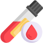

Step 01

Schedule Screening
and Get ID
Step 01
Book your appointment and receive an activation ID for secure tracking and results access.
Step 02

Visit the Diagnostic
Facility
Step 02
Attend your scheduled screening at the facility.
Step 03

Blood Sample
Collection
Step 03
A phlebotomist will draw a 5 ml blood sample using a minimally invasive procedure for a quick and comfortable experience.
Step 04
Laboratory
Testing
Step 04
Your sample will be analyzed for ovarian cancer biomarkers.